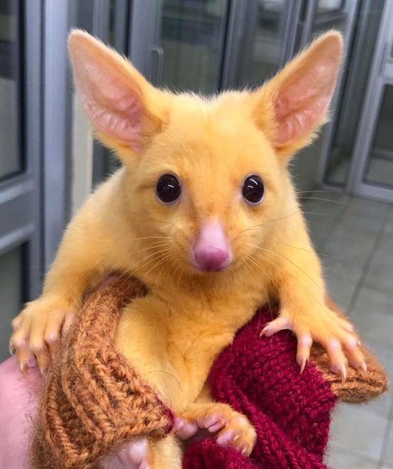
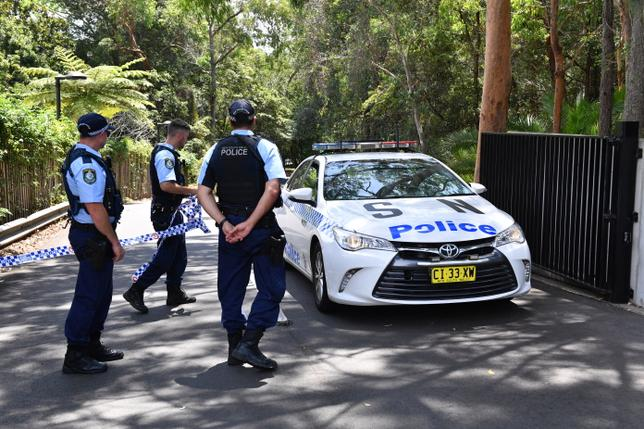

Do weterynarzy ze stanu Wiktoria w Australii trafiło zwierzę mocno przypominające kultowego Pikachu z japońskiego anime "Pokémon".

Tym zwierzęciem jest kitanka lisia, ma zaledwie pięć miesięcy i jest samicą.
Została znaleziona przez przypadkową osobę - prawdopodobnie wypadła z torby matki.
Zwierzę zostało natychmiast zaniesione do lekarza.
Weterynarze stwierdzili, że swoje jasnopomarańczowe futerko zawdzięcza niskiemu poziomowi melaniny (pigment odpowiadający za kolor skóry, owłosienia i oczu).
Kitanką lisią zaopiekuje się teraz australijska organizacja zajmująca się ratowaniem zwierząt Landcare.
Nadali jej imię Pikachu, ponieważ jest bardzo podobna do kultowej postaci.
Ze względu na swoje niezwykłe umaszczenie oraz charakter zwierzęcia nocnego, kitanka lisia będzie łatwo widoczna dla drapieżników.
Dlatego też opiekunowie nie chcą jej wypuszczać.
- Jeżeli zacznie się zachowywać brzydko i agresywnie to ją pewnie wypuścimy.
Ale jak dalej będzie raczej nieśmiała i przestraszona, to zostanie u nas na długo - dodała jedna z opiekunek z Landcare.
Z kolei australijscy zoolodzy twierdzą, że mają wiedzę na temat siedlisk podobnych kitanek lisich, ale nie chcą niczego zdradzać - w ten sposób chcą chronić zwierzęta przed fanami serii Pokémon.
Kitanka lisia to gatunek torbacza z rodziny pałankowatych.
Zwierzę naturalnie żyje na terenie Australii i Tasmanii, ale z powodzeniem introdukowano je w Nowej Zelandii.
Jest ssakiem roślinożernym, ale nie pogardzi owadami.
Ma bardzo charakterystyczny ogon - długi, mocny, pozbawiony sierści. Zazwyczaj żyje w lasach eukaliptusowych, parkach i ogrodach. Jest gatunkiem inwazyjnym.
2. Zaprojektowano maszynę do popełniania samobójstwa
Doktor Philip Nitschke, australijski aktywista na rzecz eutanazji, zaprezentował projekt kapsuły, dzięki której szybko i bez dodatkowego cierpienia można popełnić samobójstwo.
Australijczyk nazwal swoją kapsułę Sarco (prawdopodbnie pochodzi to od skrócenia słowa "sarcophagus" z języka angielskiego, które oznacza w polskim "sarkofag").
Została wykonana w drukarce 3D.
Urządzenie działa w stosunkowo prosty sposób - człowiek chcący odebrać sobie życie wchodzi do niej, kładzie się wygodnie i poprzez naciśnięcie jednego przycisku uwalnia do kabiny ciekły azot,
który obniża poziom tlenu. Śmierć ma nastąpić bezboleśnie w ciągu kilku minut.
Z kapsuły można później zrobić trumnę i odłączyć ją od reszty urządzenia - wtedy podstawia się nową dla kolejnej osoby.
- Sarco działa bez używania jakichkolwiek chemikaliów, trucizn i leków, nie wymaga też specjalistycznej wiedzy ani ekspertyz.
Każdy będzie mógł zakończyć swoje życie w sposób legalny i niezawodny - tłumaczy dr Nitschke.
Australijczyk nazwal swoją kapsułę Sarco (prawdopodbnie pochodzi to od skrócenia słowa "sarcophagus" z języka angielskiego, które oznacza w polskim "sarkofag").
Została wykonana w drukarce 3D.
Urządzenie działa w stosunkowo prosty sposób - człowiek chcący odebrać sobie życie wchodzi do niej, kładzie się wygodnie i poprzez naciśnięcie jednego przycisku uwalnia do kabiny ciekły azot, który obniża poziom tlenu.
Śmierć ma nastąpić bezboleśnie w ciągu kilku minut. Z kapsuły można później zrobić trumnę i odłączyć ją od reszty urządzenia - wtedy podstawia się nową dla kolejnej osoby.
- Sarco działa bez używania jakichkolwiek chemikaliów, trucizn i leków, nie wymaga też specjalistycznej wiedzy ani ekspertyz.
Każdy będzie mógł zakończyć swoje życie w sposób legalny i niezawodny - tłumaczy dr Nitschke.
Żeby dostać się do Sarco, najpierw trzeba przejśc specjalny test, który zbada kondycję psychiczną. Jeśli uzyska się odpowiedni wynik, potencjalny samobójca otrzyma czterocyfrowy osobisty kod do kapsuły.
Projekt kapsuły ma zostać umieszczony w Internecie jako open source - czyli będzie swobodny dostęp do niej dla każdego.
Doktor Nitschke uważa też, że to jest kolejny duży krok cywilizacji do racjonalizmu i pełnego świadomego decydowania o własnej osobie.
3. Anulowano kilkaset wiz zagranicznym przestępcom. "Nie będą krzywdzić Australijczyków"
Rząd Australii zdecydował się anulować co najmniej 800 wiz dla cudzoziemców, którzy mają związki z jakąkolwiek działalnością przestępczą. - Nie ma miejsca w naszym kraju dla ludzi, którzy tu przyjeżdżają, by krzywdzić Australijczyków - powiedział Peter Dutton, minister spraw wewnętrznych.
Według portalu news.com, wizy stracili ci cudzoziemcy, którzy dopuszczali się takich przestępstw jak gwałt, morderstwo, pedofilia, przemoc w rodzinie czy napad z bronią w ręku.
Z oświadczenie australijskiego MSW wynika, że unieważniono wizy osobom, które popełniły ciężkie przestępstwa - w tym 13 morderstw, 125 napaści i 56 rozbojów z użyciem broni.
- Witamy ludzi z całego świata, ale ci nieliczni, którzy sądzą, że mogą mieszkać w Australii i angażować się w działalność przestępczą, muszą wiedzieć, że nie zostaną tu długo - mówił Dutton.
Wśród wszystkich cudzoziemców, którzy będą deportowani lub już zostali wydaleni z Australii, około 100 osób jest zamieszanych w przestępstwa seksualne wobec dzieci, pornografię lub wykorzystywanie dzieci.
53 zostały skazane za przemoc domową, a 34 za gwałt.
W ostatnich pięciu latach liberalno-narodowy rząd koalicyjny anulował wizy 4150 cudzoziemcom, którzy popełnili poważne przestępstwa.
W październiku minionego roku rząd federalny przedstawił projekty ustaw, które miałyby sprawić, że większa liczba cudzoziemców byłaby zagrożona deportacją.
Od 2014 roku prawo w Australii anulowanie wiz tym obcokrajowcom, którzy zostali skazani na co najmniej 12 miesięcy pozbawienia wolności.
4. Sydney. 16-latek zaatakował dwóch mężczyzn w Kościele scjentologicznym. Jeden z nich nie żyje
Nastolatek został aresztowany po "dzikim ataku" w siedzibie Kościoła scjentologicznego w Sydney w Australii.
24-letni obywatel Tajwanu trafił do szpitala w ciężkim stanie, ale nie udało się go uratować.
Stan drugiego rannego oceniany jest jako stabilny.

Do ataku doszło około godziny 12.30 w Chatswood, na przedmieściach Sydney w Australii.
16-latek pochodzenia azjatyckiego, z nieznanych przyczyn zaatakował nożem kuchennym o średnicy 25 cm, dwóch pracowników siedziby Kościoła scjentologicznego.
Nastolatek został już aresztowany przez funkcjonariuszy i zabrany na komisariat, gdzie ma zostać przesłuchany.
Według policji 16-latek miał członka rodziny, który uczęszczał do kościoła i był tam obecny feralnego dnia.
Miał zostać poproszony przez mężczyzn o opuszczenie lokalu z powodu "incydentu krajowego, który miał miejsce dzień wcześniej" i nie był związany z kościołem.
Podczas eskortowania do wyjścia wyciągnął nóż i zaatakował pracowników - informuje portal sbs.com.au.